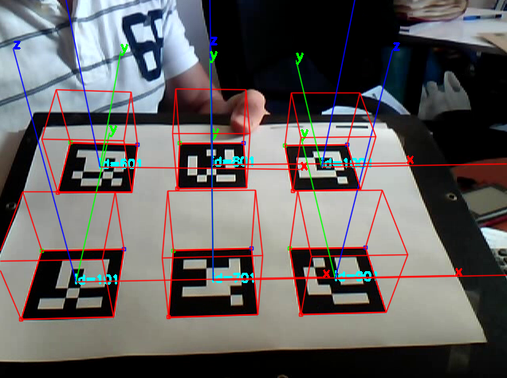

Concepto de solución 1: Sistema basado en fotografía (MEDANTRO)
1) Objetivo
Implementación de un sistema que permita calcular una determinada cantidad de medidas antropométricas a partir de una imagen fotográfica.
2) Estrategia
La estrategia de esta solución se basa en la captura de imágenes fotográficas en diferentes ángulos y disposiciones de los menores de edades comprendidas entre 10 a 12 años. Para ello, se preparará un cuarto, en el cual estará el dispositivo (ya sea tablet o celular) y un trípode para mayor estabilidad (si es que se tiene). Luego, esta captura, se enviará a una computadora para su procesamiento con el lenguaje de programación Python, ya que este programa tiene una función de medición de una imagen entre dos puntos, tomando como referencia un objeto de una medida predeterminada. Finalmente, las mediciones se comparan con el biotipo de deportistas extranjeros, con el fin de detectar el deporte al cual el niño es más propenso a practicar.
Concepto de solución 2: Sistema basado en fotogrametría
1) Objetivo
El objetivo de esta solución es generar un modelo tridimensional del sujeto para posteriormente calcular sus medidas antropométricas utilizando un software desarrollado en Python.
2) Estrategia
El primer paso a realizar es montar las cámaras en un cuarto. Una vez colocado las cámaras en distintos ángulos, se capturan las imágenes del sujeto con todas las cámaras. Utilizando softwares especializados se podrá utilizar todas las fotografías para el modelamiento en 3D, este proceso toma un largo tiempo y dependerá de las especificaciones de la computadora. Finalmente, utilizando un algoritmo en Python, se calcularán las medidas antropométricas del sujeto.
Concepto de solución 3: Sistema basado en el uso de marcadores aruco
1) Objetivo
El principio de esta solución es utilizar dos marcadores aruco para calcular la distancia entre ellos utilizando un algoritmo para su detección.
2) Estrategia
Los marcadores aruco son marcadores fiduciales que permiten detectar un punto en tiempo real, su principal beneficio es que es robusto, rápido y simple. Por esta razón, se utilizarán dos marcadores para detectar dos puntos en el cuerpo del menor y empleando un algoritmo se calcularán la distancia entre los puntos, el cual se mostrará en tiempo real superpuesto en el atleta.

CONCEPTO ESCOGIDO
La solución que escogimos es la número 1 ya que cumple con la mayoría de los requerimientos de diseño.
Tabla 3. Valoración de conceptos.
PRESENTACIÓN DEL SOFTWARE
La solución que escogimos es la número 1 ya que cumple con la mayoría de los requerimientos de diseño.
Tabla 3. Valoración de conceptos.
MATERIALES
- Una celular.
- Una vara (sistema de referencia ).
- Un trípode.
- Una computadora.
- Un asistente informático
PRESENTACIÓN DE LA SOLUCIÓN
Basándonos en las soluciones observadas en el estado del arte, se decidió que la solución tendría dos partes, lo cual se explicara en los siguientes párrafos.
Primero, la elaboración de una aplicación para dispositivos móviles, el cual podrá ser descargada en cualquier lugar del país para conseguir una adecuada captación de talento. Ésta tendrá como principal función obtener imágenes
específicas de los deportistas (a través de la cámara del dispositivo) y datos de ellos, tales como: DNI, edad y departamento. Posteriormente, esta información será enviada a una base de datos creada para el IPD.
Segundo, la elaboración de un programa basado en medición de imágenes; el cual descargan las imágenes de la base de datos, para luego, calcular las medidas necesarias para la determinación de cuál deporte el joven es propenso a destacar. Además, en el programa también se introducirá la información que fue enviada (DNI, Edad y Departamento) por medio de la aplicación. Finalmente, una vez estas medidas son tomadas, se podrá hacer la comparación con estándares para la determinación del deporte propenso a destacar.
La unión de estas partes conforma nuestra solución llamada “Medantro”.
PRESENTACIÓN DEL APLICATIVO
La aplicación contará con 5 “activities” para poder recolectar los datos correctamente.
La foto debe ser tomada correctamente para que el registro de medidas en el programa sea exitoso, por ende, la primera activity mostrará un acelerómetro. Con este se podrá saber con seguridad que el dispositivo está colocado en posición totalmente vertical. Para esto, los valores de xValue y zValue deben ser menores a 1, mientras que el yValue debe ser mayor a 9.5.
Luego de esto, se presiona en “Paso 2”, este nos llevará a la segunda activity en donde aparecerán 3 botones: “Tomar foto”, “Mostrar foto” y “Paso 3”.
Al presionar “Tomar foto” se abrirá la cámara del celular que servirá para la toma de la foto y guardarla. Para visualizarla sin necesidad de salir de la aplicación, se podrá presionar “Mostrar foto”.
Finalmente, presionamos “Paso 3” que nos llevará a la última activity.
Es en esta en donde se introducirán los datos del niño: DNI, Edad, Departamento e incluir la fotografía con el botón “Elegir archivo”. Una vez los datos sean introducidos, con el botón “Subir” estos serán enviados a la base de datos.
Estos datos son enviados a la base de datos donde posteriormente serán descargados para ser usados en el programa.